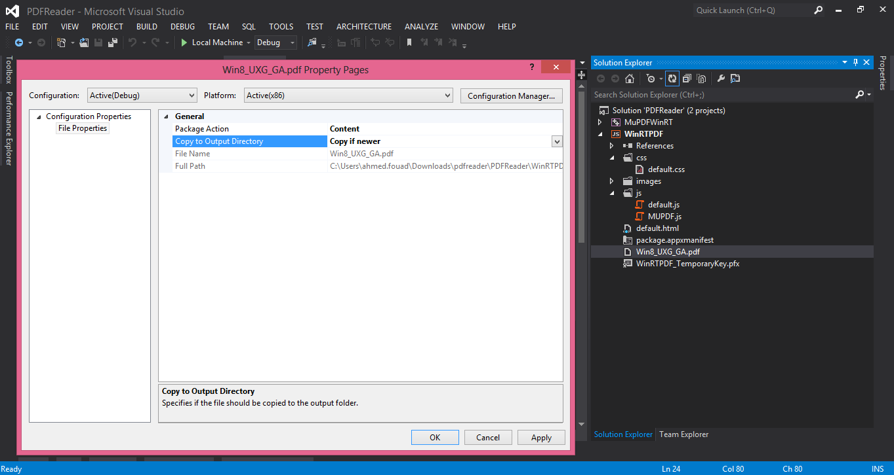

MUPDF is a free pdf library that help in pdf parsing and renderer , today we ported the MUPDF c++ library in a WinRT component , that will help you to show PDF's file in your HTML/JS or XAML/c# app.
Our Project Consist of 2 Parts the MuPDFWinRT which is the C++ WinRT Component it is a Win32 Component that can be compiled for both x86 and ARM Architects X64 is not supported yet.
And a client Project that can be XAML/C# or HTML/JS project which have a refrence for the MUPDFWinRT component.
The PDF files must have a value "content" as package action and "Copy if newer" or "Copy always" as a value for the Copy to output Folder to be sure that the PDF file will be copied to the app local files so it can be founded by the WinRTComponent.

Description
In order to make it easier for the JS developer , to show his pdf we wrapped the PDF basic Fonction in a namespace called "PDF" defined in MUPDF.Js File , it consist of 2 Public Methods and one private one.
1- openPDF: this nethod return a promise that will be complited after a pdf file is opened it will return an object that hold this pdf file.
openPDF: function (filename) {
return Windows.ApplicationModel.Package.current.installedLocation.getFileAsync(filename).then(function(file) {
return Windows.Storage.FileIO.readBufferAsync(file).then(function(fileBuffer) {
return MuPDFWinRT.Document.create(fileBuffer, MuPDFWinRT.DocumentType.pdf,
Windows.Graphics.Display.DisplayProperties.logicalDpi);
});
});
},
openPDF: function (filename) { return Windows.ApplicationModel.Package.current.installedLocation.getFileAsync(filename).then(function(file) { return Windows.Storage.FileIO.readBufferAsync(file).then(function(fileBuffer) { return MuPDFWinRT.Document.create(fileBuffer, MuPDFWinRT.DocumentType.pdf, Windows.Graphics.Display.DisplayProperties.logicalDpi); }); }); },
2- Draw: this method called the drawPage method to draw a draw the next page when the flipview is fliped , each time the user flip a page this method will call the drawPage to draw the next pages
Draw: function Draw (pdfDocument) {
var array = [];
for (var i = 0; i < pdfDocument.pageCount; i++) {
array.push(i);
}
var dataList = new WinJS.Binding.List(array);
var flipViewDOM = document.getElementById("flipView");
var flipView = flipViewDOM.winControl;
var width = flipViewDOM.clientWidth;
var height = flipViewDOM.clientHeight;
flipView.itemDataSource = dataList.dataSource;
flipView.itemTemplate = (function (itemPromise) {
return itemPromise.then(function (item) {
// root element for the item
var canvas = document.createElement("canvas");
canvas.style.width = width;
canvas.style.height = height;
canvas.id = 'canvas1';
var canvasContext = canvas.getContext("2d");
drawPage(pdfDocument, canvasContext, item.index);
return canvas;
});
});
}
Draw: function Draw (pdfDocument) { var array = []; for (var i = 0; i < pdfDocument.pageCount; i++) { array.push(i); } var dataList = new WinJS.Binding.List(array); var flipViewDOM = document.getElementById("flipView"); var flipView = flipViewDOM.winControl; var width = flipViewDOM.clientWidth; var height = flipViewDOM.clientHeight; flipView.itemDataSource = dataList.dataSource; flipView.itemTemplate = (function (itemPromise) { return itemPromise.then(function (item) { // root element for the item var canvas = document.createElement("canvas"); canvas.style.width = width; canvas.style.height = height; canvas.id = 'canvas1'; var canvasContext = canvas.getContext("2d"); drawPage(pdfDocument, canvasContext, item.index); return canvas; }); }); }
3- drawPage: this private method interact with the WinRT component asking it to draw a specific page and return it in an array of ARGB Data After it is done , we will take the resulted array and convert it to ABGR and send it to the canvas.
function drawPage (pdfDocument, canvasContext, index) {
var size = pdfDocument.getPageSize(index);
canvasContext.canvas.width = size.x;
canvasContext.canvas.height = size.y;
var imageData = canvasContext.createImageData(size.x, size.y);
var current = new Int32Array(size.x * size.y);
pdfDocument.drawPage(index, current, 0, 0, size.x, size.y, false);
// from ARGB to ABGR
for (var i = 0; i < current.length; i++) {
var val = current[i];
var cursor = i * 4;
imageData.data[cursor] = (val >> 16) & 0xFF; //r
imageData.data[cursor + 1] = (val >> 8) & 0xFF; //g
imageData.data[cursor + 2] = val & 0xFF; //b
imageData.data[cursor + 3] = 255; // a
}
canvasContext.putImageData(imageData, 0, 0);
}
function drawPage (pdfDocument, canvasContext, index) { var size = pdfDocument.getPageSize(index); canvasContext.canvas.width = size.x; canvasContext.canvas.height = size.y; var imageData = canvasContext.createImageData(size.x, size.y); var current = new Int32Array(size.x * size.y); pdfDocument.drawPage(index, current, 0, 0, size.x, size.y, false); // from ARGB to ABGR for (var i = 0; i < current.length; i++) { var val = current[i]; var cursor = i * 4; imageData.data[cursor] = (val >> 16) & 0xFF; //r imageData.data[cursor + 1] = (val >> 8) & 0xFF; //g imageData.data[cursor + 2] = val & 0xFF; //b imageData.data[cursor + 3] = 255; // a } canvasContext.putImageData(imageData, 0, 0); }